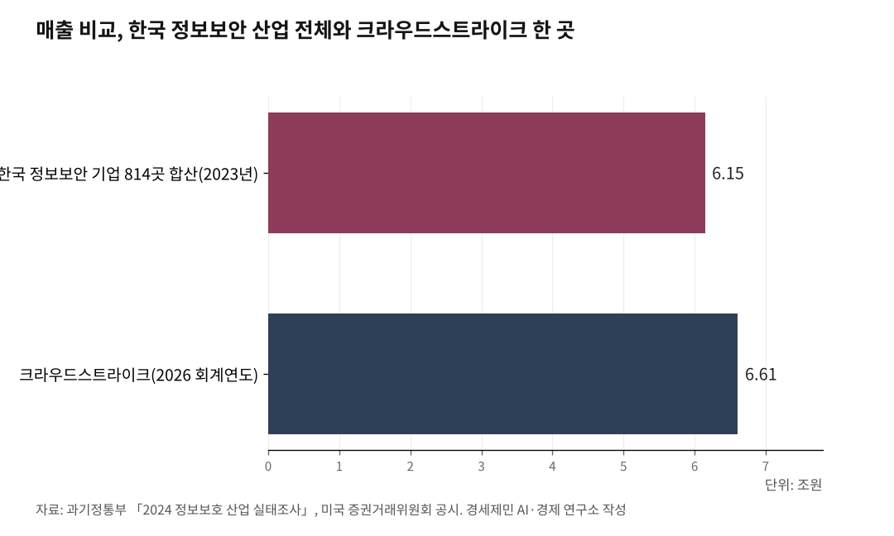

[포스트 미토스 AI ②] 앤트로픽 글래스윙 협력사 12개, 한국 기업은 없다
한국 정보보안 814개 기업 매출, 미국 보안 한 곳 수준
AI경세제민=김갑봉 기자 | 협력사 12곳은 모두 미국에 본사를 둔 기업과 재단이다. 앤트로픽은 자체 인공지능 모형 '클로드 미토스 프리뷰'를 일반에 공개하지 않고 이 12곳과 외부 40여 조직에만 제한적으로 제공하기로 했다(①편 참조).
미국 기업 12곳, 한국 기업 0곳
앤트로픽 공식 누리집(2026.4.7. 발표)이 밝힌 글래스윙 12개 협력사 명단은 다음과 같다.
아마존웹서비스, 앤트로픽, 애플, 브로드컴, 시스코, 크라우드스트라이크, 구글, 제이피모건체이스, 리눅스재단, 마이크로소프트, 엔비디아, 팰로앨토네트웍스다.
이 가운데 사이버 보안 전문 기업은 크라우드스트라이크와 팰로앨토네트웍스 두 곳이다. 자료센터와 공용 컴퓨팅을 다루는 곳은 아마존웹서비스, 구글, 마이크로소프트 세 곳이다.
처리기와 통신 장비를 만드는 곳은 엔비디아, 브로드컴, 시스코다. 금융은 제이피모건체이스, 단말 운영체계는 애플, 공개 프로그램 기반은 리눅스재단이 맡는다. 미토스 개발사 앤트로픽 자체도 12곳에 포함됐다.
12곳 모두 본사가 미국에 있다. 영국, 일본, 이스라엘, 인도, 독일, 한국 기업은 명단에 없다.
앤트로픽이 외부 40여 조직에 추가 접근권을 부여했다고 밝혔으나, 이 40여 조직 명단은 공개하지 않았다. 한국 기업이 40여 조직에 포함됐는지도 확인되지 않는다.
월가 분석은 12곳 가운데 보안 전문 기업 두 곳에 주목한다. 키뱅크 애널리스트 에릭 히스는 크라우드스트라이크를 글래스윙 사업의 "최대 수혜자"로 지목했다(파이낸셜뉴스 2026.4.17. 보도). 웨드부시 애널리스트 대니얼 아이브스는 크라우드스트라이크 목표 주가를 600달러로 상향 조정했다.

한국 정보보호 산업 16조 원, 글로벌 협력망 위치
한국 정보보호 산업 규모가 글로벌 동맹 협력 자격에 미치지 못한다는 분석이 나오는 배경에는 정부 공식 통계가 있다.
과학기술정보통신부와 한국정보보호산업협회는 2024년 10월 29일 「2024 정보보호 산업 실태조사」를 발표했다. 2023년 기준 국내 정보보호 산업 매출액은 16조 8310억 원이었다. 정보보안 6조 1455억 원, 물리보안 10조 6856억 원이다.
정보보안 기업 수는 814곳, 물리보안 기업 수는 894곳으로 합쳐 1708곳이다. 수출액은 1조 6800억 원으로 전년 대비 16.3% 감소했다(과기정통부 보도자료 2024.10.29.).
한국인터넷진흥원(KISA)은 2030년까지 정보보호 산업 매출 40조 원을 목표로 설정했다(아시아투데이 2025.11.10. 보도). 6년 안에 두 배 이상 키우겠다는 계획이다.
글래스윙 협력사 12곳 가운데 사이버 보안 전문 기업 크라우드스트라이크 한 곳 매출이 한국 정보보안 산업 전체 매출과 비슷한 규모라는 점이 한국 산업 현 위치를 보여주는 비교 지점이다.
크라우드스트라이크는 2026 회계연도(2025.2.1.~2026.1.31.) 매출 48억 1000만 달러(약 6조 6100억 원, 2026.4.26. 환율 기준)를 기록했다고 미국 증권거래위원회 공시(2026.3.3.)에서 밝혔다. 한국 정보보안 산업 814개 기업 합산 매출 6조 1455억 원과 견주면 비슷한 수준이다.
7월 취약점 공개, 골든타임이라는 진단
이상근 고려대 인공지능 보안연구소장은 2026년 4월 23일 유동수 더불어민주당 의원과 피더블유시(PwC, 회계감사·자문 글로벌 회사)컨설팅이 공동으로 연 좌담회에서 "미토스가 찾아낸 취약점 정보가 2026년 7월 초까지 대대적으로 공개될 것으로 예상된다"며 "그때까지가 골든타임"이라고 말했다.
이 소장은 "국가정보원 주도로 운영체계, 누리집 둘러보기 프로그램, 공개 프로그램 전반에 대한 긴급 패치 지침을 마련해야 한다"고 덧붙였다(파이낸셜뉴스 2026.4.26. 보도).
앤트로픽 공식 발표에 따르면 미토스는 27년 묵은 오픈비에스디(OpenBSD) 운영체계 취약점을 자율 발견했다. 16년 묵은 영상 처리 프로그램 에프에프엠펙(FFmpeg) 취약점도 찾아냈다.
이 영상 프로그램은 자동 점검 도구가 500만 회 이상 검사를 했는데도 잡아내지 못한 부분이다(①편 참조).
앤트로픽이 자체 평가에서 미토스 프리뷰가 사이버짐(CyberGym, 인공지능 모형의 사이버 보안 능력 평가 도구) 점수 83.1%, 클로드 오퍼스 4.6은 66.6%였다고 공개한 이유다. 16.5%포인트 앞선 수치다.
이 취약점들이 패치되기 전 외부에 알려지면 공격자가 같은 통로로 침투할 수 있다. 글래스윙 협력사는 패치를 사전에 받지만, 협력사 밖 기업과 정부는 7월 공개 시점까지 패치 정보를 받지 못한다.
정부, 외교 채널과 기업 네트워크 가동
같은 좌담회에서 이성엽 고려대 교수는 "사이버 보안 거버넌스를 효율화하고 통합해야 한다"며 "공격하는 인공지능이 부처별로 따로 공략하지 않는데, 대응을 나눠서 하는 것은 적절하지 않다"고 지적했다(파이낸셜뉴스 2026.4.26. 보도).
정부도 글래스윙 협력사에 한국 기업을 포함시키려 외교 채널과 기업 네트워크를 가동해 접촉을 시도하고 있다(파이낸셜뉴스 2026.4.26. 보도).
과학기술정보통신부는 앤트로픽이 미토스를 공개한 직후 통신 3사, 주요 누리집 운영사, 금융·제조·의료 기업 정보보호최고책임자(CISO, Chief Information Security Officer)를 긴급 소집해 연속 회의를 열었다.
국가안보실은 민관군 합동 대응을 주문했다.
앤트로픽은 미토스 활용 비용을 입력 100만 토큰당 25달러, 출력 100만 토큰당 125달러로 책정했다. 협력사는 클로드 에이피아이(API, 응용 프로그램이 서로 정보를 주고받는 통로), 아마존 베드록, 구글 클라우드 버텍스 에이아이, 마이크로소프트 파운드리 네 가지 통로로 모형에 접근할 수 있다.
앤트로픽은 미국 정부 관계자와도 미토스 프리뷰 사이버 능력을 두고 지속적으로 협의 중이라고 밝혔다.
확실한 점은 한국 기업이 글래스윙 12곳 출범 명단에 들어가지 못했다는 사실, 그리고 7월 초로 예상되는 미토스 취약점 공개까지 시간이 두 달 남짓 남았다는 사실이다.
양자내성암호 전환 마지노선이 2035년이라 9년 남았다는 점(번외편 참조)과 미토스 취약점 공개 골든타임이 두 달 남짓이라는 점이 동시에 한국 사이버 보안 환경에 펼쳐졌다.
※ 이 기사는 인공지능 프로그램 클로드를 활용해 작성했습니다.
참고문헌
· "Project Glasswing", Anthropic, 2026.4.7., https://www.anthropic.com/glasswing
· "2024 정보보호 산업 실태조사 결과 발표", 과학기술정보통신부 보도자료, 2024.10.29., https://www.korea.kr/briefing/pressReleaseView.do?newsId=156657295
· "CrowdStrike Reports Fourth Quarter and Fiscal Year 2026 Financial Results", CrowdStrike Holdings 8-K, 2026.3.3., https://ir.crowdstrike.com/news-releases/news-release-details/crowdstrike-reports-fourth-quarter-and-fiscal-year-2026
· "AI 보안동맹 '글래스윙' 못들어간 韓… 7월 골든타임 놓칠라", 파이낸셜뉴스, 2026.4.26., https://www.fnnews.com/news/202604261849273950
· "글로벌IB, '미토스' 최대 수혜는 보안 선도 기업 CRWD…韓영향은?", 파이낸셜뉴스, 2026.4.17., https://www.fnnews.com/news/202604171332418135
· "대규모 해킹에 흔들리는 신뢰…정보보호산업 '40조' 키워 불안 해소", 아시아투데이, 2025.11.10., https://www.asiatoday.co.kr/kn/view.php?key=20251110010004611
· "앤트로픽, 사이버 보안 이니셔티브 '프로젝트 글래스윙' 출범", 플래텀, 2026.4.8., https://platum.kr/archives/284995
· "너무 위험한 AI 모델, 미토스…앤트로픽, 일반 공개 불가", 디일렉, 2026.4.7., https://www.thelec.kr/news/articleView.html?idxno=54769
· The Linux Foundation, "Project Glasswing gives maintainers advanced AI to secure open source", 2026.4.7., https://www.linuxfoundation.org/blog/project-glasswing-gives-maintainers-advanced-ai-to-secure-open-source
· "[미토스 쇼크] '글래스윙' 넘어 글로벌 연합군 뜬다", 파이낸셜포스트, 2026.4.17., https://www.financialpost.co.kr/news/articleView.html?idxno=255871
사진 출처
· [대표사진] Derrellwilliams, "San Francisco Skyline Feb 2024.jpg", 위키미디어 공용, CC0, https://commons.wikimedia.org/wiki/File:San_Francisco_Skyline_Feb_2024.jpg
※ 이 기사는 인공지능을 활용해 작성했습니다.
관련기사
- [포스트 미토스 AI 번외] 양자컴퓨터 X 미토스, 방패와 창이 동시에 바뀐다
- [포스트 미토스 AI ③] 한국 보안 18조 6000억, 글래스윙 밖에서 7월 패치 못 받는다
- [포스트 미토스 AI ①] 2026년 4월 8일 클로드 미토스 '신세계' 예고
- [포스트 미토스 AI ④] 미토스가 흔든 한국 반도체 ⋯ HBM 1·2위가 잡고 있다
저작권자 © AI경세제민 무단전재 및 재배포, AI학습 및 활용 금지